승강기산업기사 (2019-09-21 기출문제)
1과목: 승강기개론
1. 유압식엘리베이터 펌프의 흡입 측에 부착되어 이물질을 제거하는 작용을 하는 것은?
- 미터인
- 사일렌서
- 스트레이트
- 스트레이너
(정답률: 88%)

2. 엘리베이터의 제동기에 대한 설명으로 틀린 것은?
- 마찰계수가 안정적이어야 한다.
- 기어식 권상기에서는 축에 직접 고정시켜야한다.
- 브레이크 라이닝은 가연재료로 높은 동작빈도에 견딜 수 있어야 한다.
- 브레이크 시스템은 마찰 형식의 전자-기계 브레이크로 구성하여야 한다.
(정답률: 72%)
3. 권동식 권상기의 특성이 아닌 것은?
- 소요동력이 크다.
- 높은 양정에는 상용하기 어렵다.
- 로프와 도르래 사이의 마찰력을 이용한다.
- 너무 감거나 또는 지나치게 풀 때 위험하다.
(정답률: 71%)
4. 도어머신에 요구되는 성능이 아닌 것은?
- 속도제어가 직류방식일 것
- 동작이 원활하고 정숙할 것
- 보수가 용이하고 가격이 저렴할 것
- 카 위헤 설치하기 위하여 소형 경량일 것
(정답률: 88%)
5. 엘리베이터의 조작방식에 대한 설명으로 틀린 것은?
- 하강 승합 전자동식은 2층 이상의 층에서는 승강장의 호출버튼이 하나밖에 없다.
- 카 스위치방식은 카의 기동을 모두 운전자의 의지에 따라 카 스위치의 조작에 의해서만 이루어진다.
- 단식 자동식은 하나의 요구 버튼에 대한 운전이 완전히 종료될 때까지는 다른 요구를 전혀 받지 않는 방식이다.
- 승합 전자동식은 전층의 승강장에 상승용 및 하강용 버튼이 반드시 설치되어 있어서 상승과 하강을 선택하여 누를 수 있다.
(정답률: 70%)
6. 다음은 에너지 축적형 완충기에 대한 내용이다. 다음 ( )에 들어갈 내용으로 옳은 것은?
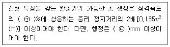
- ㉠ 115, ㉡ 60
- ㉠ 115, ㉡ 65
- ㉠ 110, ㉡ 65
- ㉠ 110, ㉡ 60
(정답률: 76%)
7. 균형추에도 비상정지장치(추락방지안전장치)를 설치하여야 하는 경우는?
- 속도가 300m/min 이상의 고속 엘리베이터 일 때
- 적재하중이 4000kg 이상의 무기어식 엘리베이터 일 때
- 승강로 하부의 피트 밑에 창고나 사무실이 있을 때
- 균형추 하부의 완충기 설치를 생략해야 할 구조일 때
(정답률: 88%)
8. 다음 ( )의 ㉠, ㉡에 들어갈 내용으로 옳은 것은?
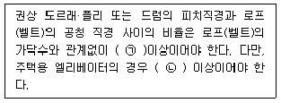
- ㉠ 20, ㉡ 30
- ㉠ 30, ㉡ 30
- ㉠ 40, ㉡ 30
- ㉠ 50, ㉡ 40
(정답률: 89%)
9. 뉴얼의 끝 지점 및 모든 지점의 자유공간을 포함한 에스컬레이터의 스텝 또는 무빙워크의 팔레트나 벨트 위의 틈새 높이는 몇 m 이상이어야 하는가?
- 2.0
- 2.1
- 2.2
- 2.3
(정답률: 57%)
10. 에이프런의 수직 부분 높이는 몇 m 이상이어야 하는가? (단, 주택용 엘리베이터의 경우는 제외한다.)
- 0.6
- 0.65
- 0.7
- 0.75
(정답률: 72%)
11. 카의 실제속도와 지령속도를 비교하여 사이리스터의 점호각을 바꿔 유도전동기의 속도를 제어하는 방식은?
- 교류 귀환제어
- 교류 2단 제어
- 워드 레오나드 방식
- 정지 레오나드 방식
(정답률: 75%)
12. 엘리베이터가 미리 정해진 속도를 초과하여 하강하는 경우, 조속기(과속조절기) 로프를 붙잡아 비상정지장치(추락방지안전장치)를 작동시키는 장치는?
- 완충기
- 엔코더
- 리미트
- 조속기(과속조절기)
(정답률: 88%)
13. 엘리베이터의 과부하감지장치에 대한 설명으로 틀린 것은?
- 작동하면 부저가 울린다.
- 과부하가 제거되면 작동이 멈추게 된다.
- 주행 중에도 작동하여 카를 멈추게 한다.
- 정격적재하중보다 많이 적재하면 작동한다.
(정답률: 87%)
14. 에스컬레이터 및 무빙워크 출입구 근처의 주요표지판에 포함하지 않아도 되는 문구는?
- 손잡이를 꼭 잡으세요
- 안전선 안에 서 주세요
- 신발은 신은 상태에서만 타세요
- 어린이나 노약자는 보호자와 함께 이용하세요
(정답률: 88%)
15. 정전 시에는 보조 전원공급장치에 의하여 엘리베이터를 몇 시간 이상 운행시킬 수 있어야 하는가?
- 1시간
- 2시간
- 3시간
- 4시간
(정답률: 82%)
16. 유압식엘리베이터에서 펌프의 토출압력이 떨어져서 실린더의 기름이 역류하여 카가 자유낙하 하는 것을 방지하는 역할을 하는 밸브는?
- 안전밸브
- 체크밸브
- 럽처밸브
- 스톱밸브
(정답률: 62%)
17. 승강로가 갖추어야 할 조건이 아닌 것은?
- 특수목적의 가스배관은 통과할 수 있다.
- 벽면은 불연재로 마감 처리되어야 한다.
- 승강로에는 1대 이상의 엘리베이터 카가 있을 수 있다.
- 엘리베이터의 균형추 또는 평형추는 카와 동일한 승강로에 있어야 한다.
(정답률: 86%)
18. 카 천장에 비상구출문이 설치된 경우, 유효개구부의 크기는 얼마 이상이어야 하는가?
- 0.2m × 0.3m
- 0.3m × 0.4m
- 0.4m × 0.5m
- 0.5m × 0.6m
(정답률: 77%)
19. 화재 등 재난 발생 시 거주자의 피난활동에 적합하게 제조·설치된 엘리베이터로서 평상시에는 승객용으로 사용하는 엘리베이터는?
- 전망용 엘리베이터
- 피난용 엘리베이터
- 소방구조용 엘리베이터
- 승객화물용 엘리베이터
(정답률: 82%)
20. 에스컬레이터의 특징으로 틀린 것은?
- 하중이 건축물의 각 층에 분담되어 있다.
- 기다림 없이 연속적으로 승객 수송이 가능하다.
- 일반적으로 엘리베이터에 비해 수송능력이 7~10배이다.
- 사용 전력량이 많지만 전동기의 구동 횟수는 엘리베이터에 비해 극히 적다.
(정답률: 85%)
2과목: 승강기설계
21. 트랙션식 권상기 도르래와 로프의 미끄러짐 관계에 대한 설명으로 옳은 것은?
- 권부각이 클수록 미끄러지기 어렵다.
- 카의 가속도와 감속도가 클수록 미끄러지기 어렵다.
- 로프와 도르래 사이의 마찰계수가 클수록 미끄러지기 쉽다.
- 카측과 균형추측에 걸리는 중량비가 클수록 미끄러지기 어렵다.
(정답률: 81%)
22. 인버터의 입력측 회로에서 전원전압과 직류전압과의 전압차에 의해 충전전류가 전원에서 기괘시터로 유입되어 전원전압의 피크부분이 절단파형으로 나타나는 것은?
- 저차 저조파
- 저차 고조파
- 고차 저조파
- 고차 고조파
(정답률: 69%)
23. 파이널 리미트 스위치(Final Limit Switch)에 대한 설명으로 틀린 것은?
- 기계적으로 조작되어야 하며, 작동 캠(cam)은 금속으로 만든 것이어야 한다.
- 승강로 내부에 장착한 파이널 리미트 스위치는 밀폐된 형식으로 되어야 한다.
- 카의 수평운동이 파이널 리미트 스위치의 작동에 영향을 끼치지 않도록 설치하여야 한다.
- 스위치 접점은 직접 기계적으로 열려야 하며, 접점을 열기 위하여 스프링이나 중력 또는 그 복합에 의존하는 장치를 사용하여야 한다.
(정답률: 67%)
24. 로프와 도르래 홈과의 면압 관계식으로 옳은 것은? (단, Pa는 면압, P는 로프에 걸리는 하중, D는 주 도르래의 지름, d는 로프의 공칭지름이다.)
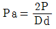
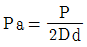
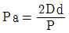
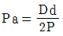
(정답률: 66%)
25. 주로프(Main Rope)가 Ø16일 때 권상 도르래의 직경은? (단, 주택용 엘리베이터의 경우는 제외한다.)
- Ø400
- Ø480
- Ø520
- Ø640
(정답률: 81%)
26. 엘리베이터 가이드(주행안내) 레일의 강도를 계산할 때 고려하지 않아도 되는 사항은?
- 레일의 단면계수
- 레일의 단면조도
- 카나 균형추의 총중량
- 레일 브래킷의 설치 간격
(정답률: 77%)
27. 카 레일용 브래킷에 대한 설명으로 틀린 것은?
- 구조 및 형태는 레일을 지지하기에 견고하여야 한다.
- 벽면으로부터 높이 1000mm 이하로 설치하여야 한다.
- 사다리형 브래킷의 경사부 각도는 15~30도로 제작한다.
- 콘크리트에 대해서는 앵커볼트로 견고히 부착하여야 한다.
(정답률: 78%)
28. 하중이 작용하는 시간에 따른 분류 중 동하중에 해당되지 않는 것은?
- 반복하중
- 교번하중
- 충격하중
- 집중하중
(정답률: 63%)
29. 상부체대와 카바닥 틀의 처짐은 전 길이의 얼마 이하이어야 하는가?
- 1/48
- 1/96
- 1/480
- 1/960
(정답률: 65%)
30. 비상정지장치(추락방지안전장치) 종류 중 F.G.C형 비상정지장치(추락방지안전장치)에 관한 설명으로 틀린 것은?
- 동작이 되면 복귀가 어렵다.
- 구조가 간단하고 공간을 적게 차지한다.
- 점차 작동형 비상정지장치(추락방지안전장치)의 일종이다.
- 레일을 죄는 힘은 동작 시부터 정지 시까지 일정하다.
(정답률: 69%)
31. 승강로 내부 작업구역의 유효 높이는 몇 m 이상이어야 하는가?
- 1.8
- 2.1
- 2.5
- 3.5
(정답률: 72%)
32. 건축물 용도별 엘리베이터와 승객 집중시간에 대한 연결로 틀린 것은?
- 호텔 - 새벽시간
- 사무용 - 출근 시 상승
- 백화점 - 일요일 정오 전후
- 병원 - 면회시간 시작 직후
(정답률: 86%)
33. 엘리베이터 전력 간선 산출 시 고려되는 전류의 산출식과 관계없는 것은?
- 전압강하계수
- 엘리베이터 대수
- 제어용 부하의 정격전류
- 정격전류(전부하 상승 시 전류)
(정답률: 49%)
34. 동력전원설비 설계기준에서 가속전류의 정의로 옳은 것은?
- 카가 전부하 상태에서 상승방향으로 가속 시 배전선에 흐르는 최대 전류
- 카가 무부하 상태에서 상승방향으로 가속 시 배전선에 흐르는 최대 전류
- 카가 전부하 상태에서 하강방향으로 가속 시 배전선에 흐르는 최대 전류
- 카가 무부하 상태에서 하강방향으로 가속 시 배전선에 흐르는 최대 전류
(정답률: 68%)
35. 대기시간 20초, 승객출입시간 30초, 도어개폐시간 27초, 주행시간 55초, 손실시간 8초일 때 일주시간(RTT)은?
- 112초
- 120초
- 240초
- 280초
(정답률: 75%)
36. 권상 도르래의 지름이 720mm이고, 감속비가 45:1, 전동기 회전수가 1800rpm, 1:1로핑인 경우의 엘리베이터의 속도는 약 몇 m/min인가?
- 30
- 60
- 90
- 1⑤
(정답률: 63%)
37. 그림은 유압엘리베이터의 블리드오프 회로의 하강운전 시 속도, 유량 및 동작곡선도이다. 그림에 대한 설명으로 틀린 것은?
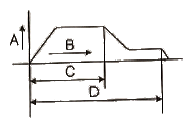
- A : 속도
- B : 시간
- C : 전동기 회전
- D : 전자밸브 여자
(정답률: 71%)
38. 승강장도어 인터록(Door interlock)에 대한 설명으로 옳은 것은?
- 카 도어의 열림을 방지하는 안전장치이다.
- 도어스위치의 접점이 떨어진 후에 도어록이 열리는 구조이어야 한다.
- 신속한 승객 구출물을 위해 일반 공구를 사용하여 열 수 있어야 한다.
- 도어록이 확실히 걸리면, 스위치의 접점이 떨어져도 카는 움직여야 한다.
(정답률: 63%)
39. 반복하중을 받고 있는 인장강도 75kg/mm2의 연강봉이 있다. 허용응력을 25kg/mm2로 할 때 안전율은 얼마인가?
- 3
- 4
- 5
- 6
(정답률: 81%)
40. 다음과 같은 전동기의 내열등급 중 가장 높은 온도까지 견딜 수 있는 것은?
- A종
- E종
- H종
- F종
(정답률: 70%)
3과목: 일반기계공학
41. 압력 제어 밸브의 종류로 틀린 것은?
- 체크 밸브
- 릴리프 밸브
- 리듀싱 밸브
- 카운터 밸런스 밸브
(정답률: 54%)
42. 지름이 50mm인 원형 단면봉의 길이가 1m이다. 이 봉이 2개의 강체에 20℃에서 고정하였다. 온도가 30℃가 되었을 때, 이 봉에 발생하는 압축응력은? (단, 봉의 열팽창계수는 12×10-6/℃, 세로탄성계수는 E = 207GPa이다.)
- 12.42MPa
- 24.84MPa
- 12.42kPa
- 24.84kPa
(정답률: 61%)
43. 관 끝을 나팔 모양으로 벌리는 가공으로 보통 90° 각도로 작게 가공하는 것은?
- 플레어링
- 플랜징
- 롤러 성형
- 비딩 가공
(정답률: 64%)
44. 플라스틱 수지로 수축이 적고 우수한 전기적 특성 및 강한 물리적 성질을 가지고 있어 관재제작, 용기성형, 페인트, 접착제 등에 널리 사용되는 염기화성 수지는?
- 염화비닐 수지
- 스틸랜 수지
- 아크릴 수지
- 에폭시 수지
(정답률: 73%)
45. 코일스프링의 소선지름(d)을 스프링의 처짐량식에서 구하고자 할 때, 다음 중 반드시 필요한 요소가 아닌 것은?
- 하중(P)
- 스프링의 길이(L)
- 소선의 전단단성계수(G)
- 코일스프링 전체의 평균지름(D)
(정답률: 64%)
46. 그림과 같이 길이 1m의 사각단면인 외팔보에 최대처짐을 0.2cm로 제한하고자 한다. 이보에 작용하는 집중하중 P는 약 몇 kN이어야 하는가? (단, 재료의 세로탄성계수는 2×105N/mm2이다.)
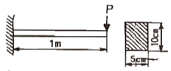
- 3
- 5
- 7
- 9
(정답률: 66%)
47. 두 축이 평행하고, 두 축의 중심선이 약간 어긋났을 경우에 각 속도의 변화 없이 토크를 전달시키려고 할 때 사용하는 축이음은?
- 머프 커플링
- 올덤 커플링
- 플랜지 커플링
- 클램프 커플링
(정답률: 65%)
48. 리벳이음의 효율에 대한 설명으로 틀린 것은?
- 리벳이음의 효율에는 판의 효율과 리벳 효율이 있다.
- 리벳이음의 설계에서 리벳의 효율은 판의 효율보다 2배 크게 한다.
- 판 효율은 구멍이 없는 판에 대한 구멍이 있는 판의 인장강도 비로 나타낸다.
- 리벳 효율은 구멍이 없는 판의 인장강도에 대한 리벳의 전단강도 비를 말한다.
(정답률: 57%)
49. 연삭숫돌의 결함에서 숫돌 입자의 표면이나 기공에 침칩이 메워져서 집을 처리하지 못하여 연식성이 나빠지는 현상은?
- 눈메움
- 트루잉
- 드레싱
- 무딤
(정답률: 71%)
50. 두랄루민(duralumin)의 전체 성분에서 원소 함유량이 가장 많은 것은?
- Fe
- Mg
- Zn
- Al
(정답률: 75%)
51. 두 축이 평행하지도 교차하지도 않는 경우 사용하는 기어는?
- 베벨기어
- 스퍼기어
- 헬리컬기어
- 하이포이드기어
(정답률: 65%)
52. 다음 중 강인성을 증가시켜 내열, 내식, 내마모성이 풍부하기 때문에 주로 기어, 핀, 축류에 사용되는 기계구조용 합금강은?
- SS 490
- SM 45C
- SM 400A
- SNC 415
(정답률: 62%)
53. 단면적이 25cm2인 원형기둥에 10kN의 압축하중을 받을 때 기둥 내부에 생기는 압축응력은 몇 MPa인가?
- 0.4
- 4
- 40
- 400
(정답률: 46%)
54. 축과 보스 사이에 2~3곳을 축 방향으로 쪼갠 원뿔을 때려 박아 축과 보스를 헐거움 없이 고정할 수 있는 키는?
- 평 키
- 접선 키
- 원뿔 키
- 반달 키
(정답률: 82%)
55. 일명 미끄럼 키라고도 하며 회전 토크를 전달함과 동시에 보스가 축 방향으로 이동할 수 있는 키는?
- 평 키
- 새들 키
- 페더 키
- 반달 키
(정답률: 65%)
56. 진양정이 30m이고, 급수량이 1.2m3/min인 펌프를 설계할 때, 펌프의 효율을 0.75로 하면 펌프의 축동력은 약 몇 kW인가?
- 5.7
- 7.8
- 8.7
- 10.5
(정답률: 55%)
57. 유압기기에 사용되는 유압 작동유의 구비조건으로 옳은 것은?
- 열팽창 계수가 클 것
- 압축률(압축성)이 높을 것
- 중기압이 낮고 비점이 높을 것
- 열전달율이 낮고 비열이 작을 것
(정답률: 51%)
58. 마이크로미터의 측정면이나 블록 게이지의 측정면과 같이 비교적 작고, 정밀도가 높은 측정물의 평면도 검사에 사용하는 측정기로 가장 적합한 것은?
- 옵티컬 플랫
- 윤곽 투영기
- 오토 콜리메이터
- 컴비네이션 세트
(정답률: 71%)
59. 다음 중 아크 용접에서 언더 컷(under cut)의 발생 원인으로 가장 적합한 것은?
- 전류 부족, 용접 속도 빠름
- 전류 부족, 용접 속도 느림
- 전류 과대, 용접 속도 빠름
- 전류 과대, 용접 속도 느림
(정답률: 69%)
60. 주조형 목형(원형)을 실물치수보다 크게 만드는 가장 중요한 이유는?
- 코어를 넣기 때문이다.
- 잔형을 덧붙임하기 때문이다.
- 주형의 치수가 크기 때문이다.
- 수축여유와 가공여유를 고려하기 때문이다.
(정답률: 81%)
4과목: 전기제어공학
61. 변압기 정격 1차 전압의 의미로 옳은 것은?
- 정격 2차 전압에 권수비를 곱한 것이다.
- 1/2부하를 길었을 때의 1차 전압이다.
- 무부하일 때의 1차 전압이다.
- 정격 2차 전압에 효율을 곱한 것이다.
(정답률: 62%)
62. 100V, 60Hz의 교류전압을 어느 커패시터에 가하니 2A의 전류가 흘렸다. 이 커패시터의 정전용량은 약 몇 ㎌인가?
- 26.5
- 36
- 53
- 63.6
(정답률: 33%)
63. 다음의 정류회로 중 리플전압이 가장 적은 회로는? (단, 저항부하를 사용한 경우이다.)
- 3상 반파 정류회로
- 3상 전파 정류회로
- 단상 반파 정류회로
- 단상 전파 정류회로
(정답률: 62%)
64. 개루프(open loop) 제어시스템을 페루프(closed loop) 제어시스템으로 변경하면 루프 이득은 어떻게 되는가?
- 불변이다.
- 증가한다.
- 감소한다.
- 증가하다가 감소한다.
(정답률: 60%)
65. 그림과 같은 회로의 합성 임피던스는?
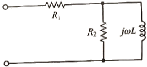
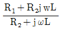
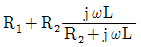
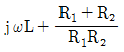
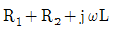
(정답률: 63%)
66. 그림과 같은 유접점 시퀀스회로의 논리식은?
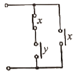
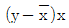
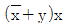
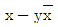
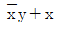
(정답률: 69%)
67. 자동제어를 분류할 때 제어량에 의한 분류가 아닌 것은?
- 정치세어
- 서보기구
- 프로세스제어
- 자동조정
(정답률: 38%)
68. 전달함수의 특성에 관한 내용으로 틀린 것은?
- 전달함수는 선형제어계에서만 정의된다.
- 전달함수를 구할 때 제어계의 초기 값은 “1”로 한다.
- 전달함수는 제어계의 입력과는 관계없다.
- 단위임펄스 함수에 대한 출력이 임펄스 응답일 때 전달함수는 임펄스응답의 라플라스변환으로 정의된다.
(정답률: 63%)
69. 인가전압을 변화시켜 전동기의 회전수를 800rpm으로 하고자 한다. 이 경우 회전수는 다음 중 어느 것에 해당되는가?
- 동작신호
- 기준값
- 조작량
- 제어량
(정답률: 55%)
70. 그림과 같은 블록선도가 의미하는 요소는?
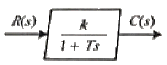
- 비례 요소
- 미분 요소
- 1차 지연 요소
- 2차 지연 요소
(정답률: 71%)
71. 그림과 같은 피드백 제어계의 전달함수는?
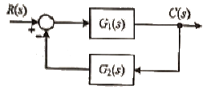
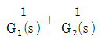
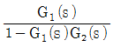
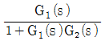
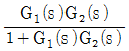
(정답률: 69%)
72. 열차의 무인운전이나 열처리로의 온도제어는?
- 정치 제어
- 추종 제어
- 비율 제어
- 프로그램 제어
(정답률: 80%)
73. 자기인덕턴스가 L1, L2, 상호인덕턴스가 M인 결합회로의 결합계수가 1이라면 그 관계식은 어떻게 되는가?
- L1L2=M
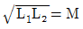
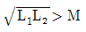
- L1L2＞M
(정답률: 70%)
74. 그림의 시퀀스회로에서 전자계전기(relay) R의 a접점(normal open)의 역할은? (단, A와 B는 푸시버튼 스위치이다.)
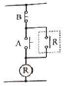
- 인터록
- 자기유지
- 지연논리
- NAND논리
(정답률: 76%)
75. 평형 3상 Y결선의 상전압의 크기가 Vp(V)일 때 선간전압의 크기는 몇 V인가?
- 3Vp
- √3Vp
- Vp/√3
- Vp/3
(정답률: 71%)
76. 그림 (a)의 병렬로 연결된 저항회로에서 전류 I와 I1의 관계를 그림 (b)의 블록선도로 나타낼 때 G(s)에 들어갈 전달함수는?
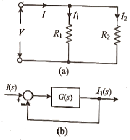
- R1/R2
- R2/R1
- 1/R1R2
- 1/R1+R2
(정답률: 51%)
77. G(jω)=jω인 시스템에서 ω=0.01 rad/sec일 때 이 시스템의 이득은 몇 dB인가?
- -10
- -20
- -30
- -40
(정답률: 41%)
78. 그림과 같은 논리회로의 논리식은?
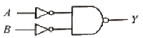
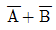
- A+B
- A B
- AB
(정답률: 58%)
79. 무효전력을 나타내는 단위는?
- VA
- W
- var
- Wh
(정답률: 75%)
80. 2Ω의 저항 10개가 있다. 이 저항들을 직렬로 연결한 합성저항은 병렬로 연결한 합성저항의 몇 배인가?
- 150
- 100
- 50
- 10
(정답률: 71%)